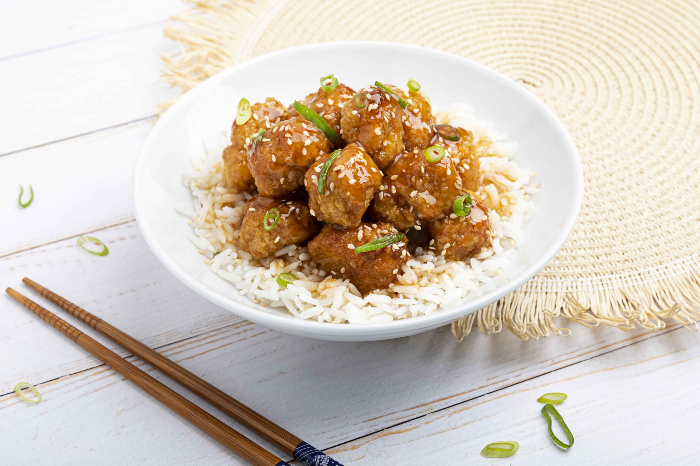

Sweet And Sour Chicken

Description
Okay picture this: you planned an Asian themed dinner for tonight and you totally forgot about it. We got you covered!
With the aid of this page you are going to make the best dish of the night, just follow the steps and you're good to go!
Shopping List
- Chicken Breasts - 400g
- Corn Starch - 2 tbsp
- Salt and Pepper - 1 pinch
- Crushed Garlic Cloves - 1
- Sriracha - 1 tsp
- Grated Ginger Root - 1 tsp
- Soy Sauce - 2 tbsp
- Honey - 2 tbsp
- Optional: Sesame Seeds
Steps
- Cut the chicken breasts to bites-size and add them to a bowl
- Add cornstarch, salt and pepper and mix well
- Oil a pan, let it heat and place the chicken on low heat. Cover with a lid
- In a separate container, mix the remaining ingredients, you can add them in whatever order you like
- Once all the chicken bites are golden on all sides, add the sauce to the pan and stir until you get a sticky caramel-like consistency
- Serve!
Go to Homepage